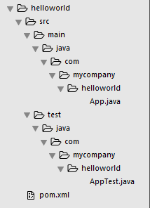
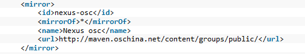

Maven初体验¶
2016-01-22 12:01:22
Maven是基于项目对象模型（POM），可以通过一小段描述信息来管理项目的构建，报告和文档的管理工具
Maven安装¶
- 安装JDK，并配置好环境变量
- Maven：官网地址
- 解压下载文件，设置环境变量
- 变量名：
MAVEN_HOME - 变量值：你放置Maven目录，如
C:\DevTool\Maven\apache-maven-3.3.3 - 添加Path：
%MAVEN_HOME%\bin
- 变量名：
- CMD命令窗口输入：
mvn -v，回车，可以查看到你当前安装Maven的版本，即安装成功
Maven项目构建¶
自动创建项目骨架
- CMD命令：
mvn archetype:generate -DgroupId=com.mycompany.helloworld -DartifactId=helloworld -Dpackage=com.mycompany.helloworld -Dversion=1.0-SNAPSHOT
- 命令解释：
archetype:generate：列出Maven构建项目模板DgroupId：组织名，通常用公司网址的反写+项目名DartifactId：项目在组织中唯一标识，通常用项目名+模块名Dpackage：代码所存在的包名Dversion：版本号
Note
- 第一次构建项目需要链接网络，从网上的 maven 库 (repository) 下载需要文件，存放在本地库（
<C:\YouPCName\.m2\repository\>）中 - 文件加载完需要选择你要使用模板的编号（这里选择716即可）
Choose a number or apply filter (format: [groupId:]artifactId, case sensitive contains): 716:716 - 需要选择构建使用的版本号（这里选择最新6对应的版本）
Choose org.apache.maven.archetypes:maven-archetype-quickstart version:6 - 确认构建项目
Confirm properties configuration:y - 构建过程：日志
项目目录结构

Maven项目运行¶
- CMD命令，先进入项目文件夹，再输入：
mvn package - 此时，Maven在helloworld项目下面建立一个新的目录target/，构建打包后的jar包文件，
helloworld-1.0-SNAPSHOT.jar就放在这个目录下；编译后的的class文件放在target/classes/目录下，测试class文件放在target/test-classes/目录下 - 运行项目，CMD命令：
java -cp target/helloworld-1.0-SNAPSHOT.jar com.mycompany.helloworld.App，查看是否输出：Hello World!
Note
Maven镜像仓库¶
- 修改镜像仓库地址
可能由于国内网络问题，无法访问外网，那么我们就需要修改配置文件，访问国内的Maven镜像仓库地址
- settings.xml文件路径（Maven安装路径\conf\settings.xml）
如C:\DevTool\Maven\apache-maven-3.3.3\conf\settings.xml - 打开settings.xml文件，修改152-157行内容并取消注释
 - 更多详细设置，详情见开源中国Maven库使用帮助
- settings.xml文件路径（Maven安装路径\conf\settings.xml）
- 修改本地仓库地址
可能有些时候我们需要自定义更改Maven的本地仓库默认地址
- settings.xml文件路径（Maven安装路径\conf\settings.xml）
如C:\DevTool\Maven\apache-maven-3.3.3\conf\settings.xml - 打开settings.xml文件，修改53行路径并取消注释
<localRepository>D:/MavenProject/repo</localRepository>
- settings.xml文件路径（Maven安装路径\conf\settings.xml）
Eclipse安装Maven插件¶
Eclipse4.0以上版本或者MyEclipse中已经集成了Maven插件，不用手动安装
Eclipse创建Maven项目¶
- New > Maven >Maven Project > Next
- 选择ArtifactId是maven-archetype-quickstart模板进行构建
- 根据需要，填写GroupId，ArtifactId，会自动生成Package > Finish
Eclipse运行Maven项目¶
- 展开项目目录结构，选中
pom.xml文件右键 - Run As > Maven build... < Goals(输入compile，或者package：compile表示编译，package表示打包)
POM.xml文件常用标签¶
- 常用标签说明
- 依赖范围：官方文档说明
依赖范围是用来控制依赖于三种classpath的关系
compile：默认范围，编译测试运行都有效
provided：在编译和测试时有效
runtime：在测试和运行时有效
test：只在测试范围有效
system：于provided使用范围一样，同时与本机系统相关联，可移植性差
import：导入依赖范围，它只使用在dependencyManagement中，表示从其它的pom中导入dependency的配置 - 依赖传递：类似可以理解A依赖B,B依赖C,即A依赖C
- 依赖冲突：
- 原则1：在路径不同情况下，先解析路径短的依赖
如：依赖一、A > B > C > X(jar)
依赖二、A > D > X(jar)默认选择会选择这条依赖先解析 - 原则2：在路径相同情况下，先声明，先解析
- 原则1：在路径不同情况下，先解析路径短的依赖
- 聚合与继承
在Maven项目中有多个项目，想要install命令安装到本地仓库或其他命令，必须每个项目一次一次执行，Maven一次性进行install命令处理项目的这种方式，叫做聚合
在聚合的项目pom中加入modules标签，modules中加入module标签，module标签填入需要聚合项目的地址即可
Maven构建Web项目¶
- New > Maven >Maven Project > Next
- 选择ArtifactId是maven-archetype-webapp模板进行构建
- 根据需要，填写GroupId，ArtifactId，会自动生成Package > Finish
- 展开项目，右键Java Resources > New > Source Folder
Project Name：Browse... > 定位到当前项目名
Folder Name：src/main/java（第二次src/test/java） - 检查class文件输出路径： 项目右键 > Build Path > Configure Build Path... > Source 下查看
- 转化项目为Web项目： 项目右键 > Properties > Project Facets（左侧导航栏）> 勾选Dynamic Web Module选项
- 修改部署时，项目的默认配置： 项目右键 > Properties > Deployment Assembly（左侧导航栏）> 移除包含/src/test路径的目录
- 使用jetty插件运行web项目
- Maven中央仓库：搜索jetty
- 选择Jetty :: Server Core Web Servers，根据需要选择版本，进入版本页面后复制下面图表Maven中的标签地址
- 粘贴入
pom.xml文件标签中 - 选择项目，右键 > Run As > Maven build > Goals(输入需要的命令，如：jetty.run)
- 在控制台Console中显示出
Started Jetty Server，表名已经成功运行 - 浏览器中输入：http://localhost:8080/项目名
- 使用Tomcat运行Web项目
- 选择 Tomcat 需要的版本
- 复制示例代码中
中的坐标 - 粘贴入
pom.xml文件中标签中 - 选择项目，右键 > Run As > Maven build > Goals(输入需要的命令，如：package)
- 在控制台Console中显示出
Started Server Tomcat，表名已经成功运行 - 浏览器中输入：http://localhost:8080/项目名
Note
当我们第一次创建，可能由于缺少servlet的api导致.jsp文件报错
1. 打开Maven中央仓库地址：搜索servlet
2. 选择Java Servlet API进入，根据需要选择版本，进入版本页面后复制下面图表Maven中的标签地址
3. 粘贴入pom.xml文件
如果我们在新创建Resource Folder时无法创建，我们切换到Navigator模式下新建Resource Folder即可